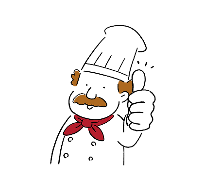

わたしたち
店 名
喫茶ワズ
住 所
〒012-3456
愛知県名古屋市天白区植田本町
00-00
電話番号
000-000-0000
営業時間
8:00〜17:00
定 休 日
火曜日
座 席 数
店内30席／テラス8席
駐 車 場
あり（10台）
マスター
山田太郎
喫茶ワズのマスター兼オーナー。
名古屋の調理師学校を卒業後、大手飲食店を経営する会社で長年勤務。
調理から店舗経営（本社マネージャー兼 子会社執行役員）まで経験。
会社勤務時代から国内の多くのカフェを巡るほか、趣味の旅行も兼ねて欧米を中心に世界各地の飲食店を視察した。
モットーは良質で身体に優しい料理をお客様に提供すること。
2024年2月、これまでの経験と視察研究の成果を実践するため名古屋市天白区植田に「喫茶ワズ」をオープン。
地域に根ざし、老若男女関係なく誰もが気軽に訪れることのできるカフェを模索中。
